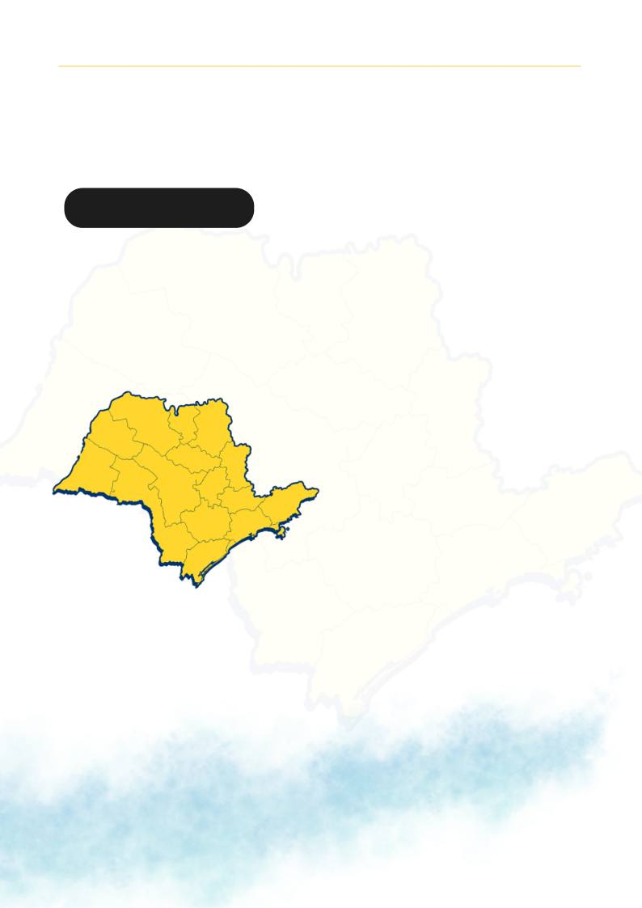

O Setor de Fiscalização do CRTR-SP
apresenta os dados consolidados das
atividades realizadas no período de 01
de junho a 20 de agosto de 2026,
demonstrando o trabalho contínuo de
acompanhamento, orientação e
fiscalização.
Atualmente, o setor conta com a
colaboração de 8 profissionais na
equipe de fiscais. Os resultados
refletem o compromisso do Setor de
Fiscalização com a regularidade das
atividades, a prevenção de
irregularidades e a promoção de
melhores condições para a sociedade.
Ações Fiscalizatórias
S E Ç Ã O I N S T I T U C I O N A L - B O L E T I M I N F O R M A T I V O
JUN-AGO 2026
BOLETIM
INFORMATIVO
ALÉM DA IMAGEM · CORED-SP · CRTR-SP
24